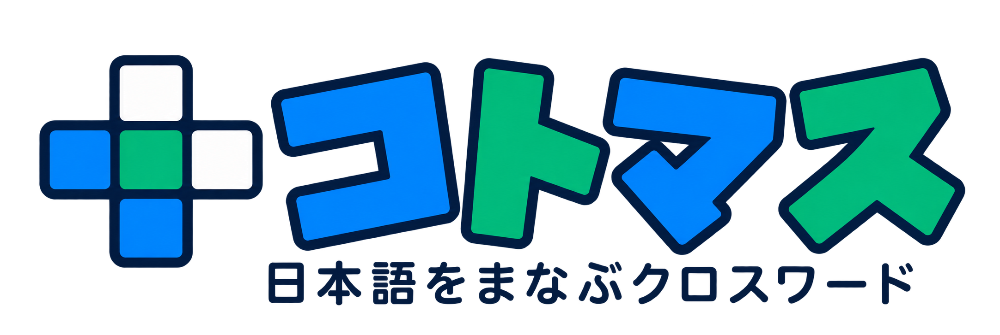

N2全6課・1,150語。ひとつずつ、使えることばに。
ことばのかけら 0
問題 意味（英語）
正解した言葉
ことばの庭 · ご褒美コレクション
クリアごとに「ことばのかけら」を1個。ヒントを使っても、同じ盤面に再挑戦しても獲得できます。コトマスとコトマスN2で共通です。
クリア記録
記録はこの端末・ブラウザに保存します。

N2全6課・1,150語。ひとつずつ、使えることばに。
クリアごとに「ことばのかけら」を1個。ヒントを使っても、同じ盤面に再挑戦しても獲得できます。コトマスとコトマスN2で共通です。
記録はこの端末・ブラウザに保存します。
共有先は端末によって異なります。画像を保存して、XやInstagramにも投稿できます。保存されない場合は画像を長押しして保存してください。